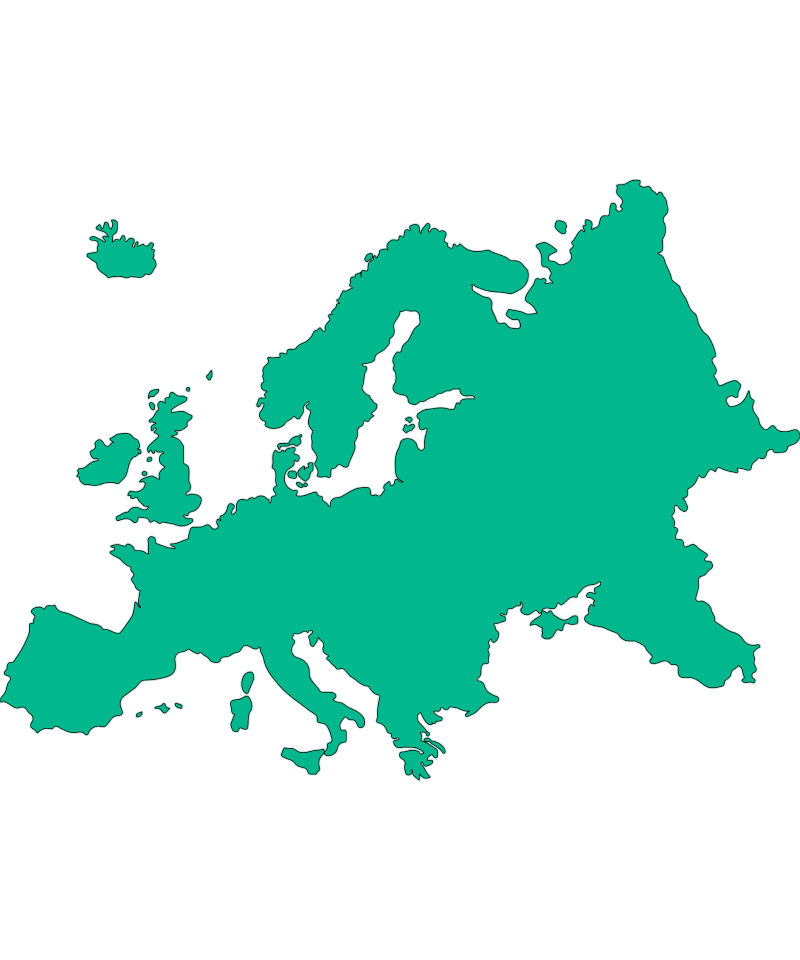
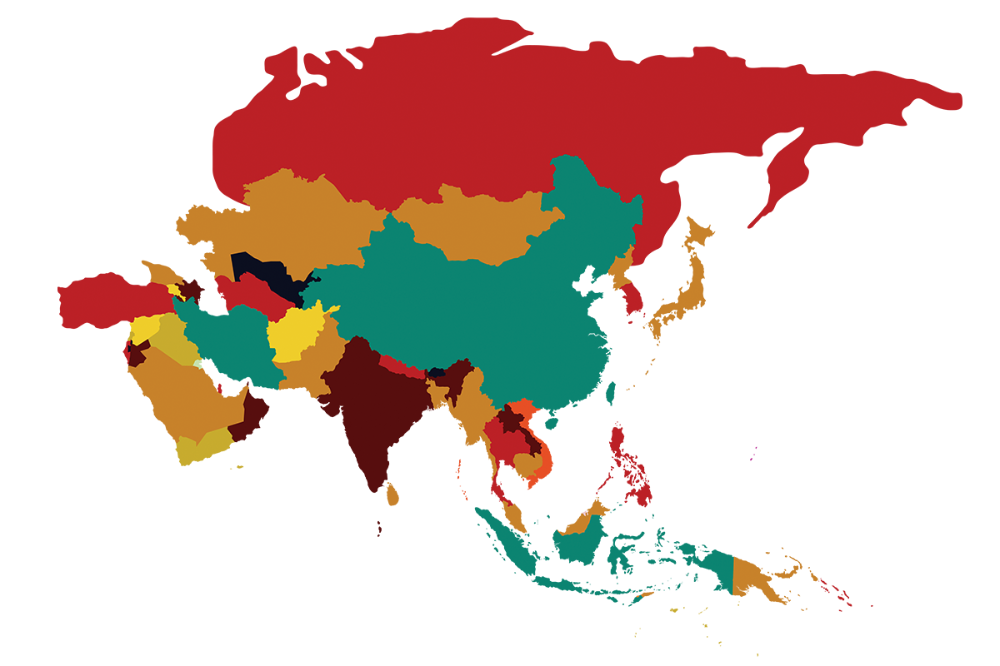
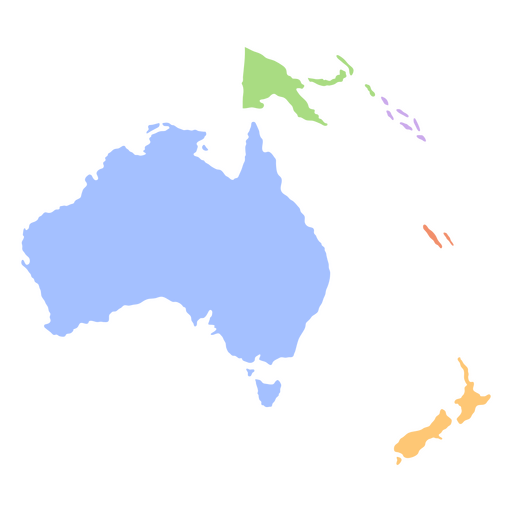

O que é o visto e como funciona?
O visto é um documento oficial de imigração. Ele autoriza a entrada, permanência ou trânsito em
um país
por um período específico.
Suas regras funcionam conforme os critérios específicos de cada país, e a documentação pode ser
emitida
para diferentes finalidades, como:
- Turismo
- Estudo
- Trabalho
- Residência
Quais países NÃO exigem visto para brasileiros?
Sabemos que lidar com a burocracia na emissão de vistos antes de viajar pode ser cansativo. Mas
isso não
é motivo para desistir de uma viagem internacional.
Afinal, atualmente nós brasileiros podemos entrar em cerca de 110 países sem necessidade de
visto.
Claro, esta lista está sujeita a alterações. Afinal, cada nação tem autonomia para modificar
suas
políticas de imigração. Apresentamos aqui a versão atualizada para 2025. Confira:
Europa

Vale lembrar que, mesmo sem a exigência de visto, todos os viajantes devem passar pelo setor de
imigração ao chegar ao destino desejado.
E outro adendo importante é que, a partir de maio de 2025, os 33 países que fazem parte do Tratado
de Schengen vão exigir que os brasileiros emitam uma autorização de viagem antes de embarcar para
sua viagem ao continente, a ETIAS.
Não se trata de um visto, mas sim um documento com as informações de viagem dos passageiros. A ETIAS
pode ser emitida online pelo valor de €7.
| País |
Permanência |
| Alemanha |
90 dias |
| Andorra |
90 dias |
| Áustria |
90 dias |
| Bélgica |
90 dias |
| Bósnia |
90 dias |
| Bulgária |
90 dias |
| Chipre |
90 dias |
| Croácia |
90 dias |
| Dinamarca |
90 dias |
| Eslováquia |
90 dias |
| Eslovênia |
90 dias |
| Espanha |
90 dias |
| Estônia |
90 dias |
| Finlândia |
90 dias |
| França |
90 dias |
| Geórgia |
90 dias |
| Grécia |
90 dias |
| Holanda |
90 dias |
| Hungria |
90 dias |
| Irlanda |
90 dias |
| Islândia |
90 dias |
| País |
Permanência |
| Itália |
90 dias |
| Letônia |
90 dias |
| Liechtenstein |
90 dias |
| Lituânia |
90 dias |
| Luxemburgo |
90 dias |
| Malta |
90 dias |
| Mônaco |
90 dias |
| Noruega |
90 dias |
| Polônia |
90 dias |
| Portugal |
90 dias |
| Reino Unido |
90 dias |
| República Tcheca |
90 dias |
| Romênia |
90 dias |
| San Marino |
90 dias |
| Sérvia |
90 dias |
| Suécia |
90 dias |
| Suíça |
90 dias |
| Turquia |
90 dias |
| Ucrânia |
90 dias |
| Vaticano |
90 dias |
|
|
Américas
Somos recebidos de braços abertos por vários países do continente americano, principalmente na
América
do Sul e Central, e podemos ficar nesses destinos como turistas por diferentes períodos.
Os Estados Unidos, o Canadá e o México não estão na lista. Isso porque os países da América do Norte
exigem que brasileiros tirem vistos para viajar, independente se for apenas para turismo ou com
outro objetivo.
No entanto, conseguimos passear em muitos países das Américas sem precisar desse tipo de documento.
E no caso dos países do Mercosul, turistas brasileiros podem viajar sem passaporte, apenas com o RG.
| País |
Permanência |
| Antígua e Barbuda |
180 dias |
| Argentina |
90 dias |
| Bahamas |
90 dias |
| Barbados |
180 dias |
| Belize |
90 dias |
| Bolívia |
30 dias |
| Chile |
90 dias |
| Colômbia |
180 dias |
| Costa Rica |
90 dias |
| Dominica |
90 dias |
| El Salvador |
90 dias |
| Equador |
90 dias |
| Guiana |
90 dias |
| Guatemala |
90 dias |
| Haiti |
90 dias |
| País |
Permanência |
| Honduras |
30 dias |
| Jamaica |
90 dias |
| Nicarágua |
90 dias |
| Panamá |
90 dias |
| Paraguai |
90 dias |
| Peru |
90 dias |
| República Dominicana |
90 dias |
| Santa Lúcia |
90 dias |
| São Cristóvão e Nevis |
90 dias |
| São Vicente e Granadinas |
90 dias |
| Suriname |
90 dias |
| Trinidad e Tobago |
90 dias |
| Uruguai |
90 dias |
| Venezuela |
90 dias |
Ásia

Já pensou em conhecer Singapura, Dubai, Istambul ou Jerusalém? Pois saiba que isso é possível tendo
em mãos seu passaporte, e sem necessidade de vistos.
Confira a lista completa de países que brasileiros não precisam de visto na Ásia, e por quanto tempo
podemos ficar como turistas:
| País |
Permanência |
| Armênia |
90 dias |
| Cazaquistão |
30 dias |
| Coréia do Sul |
90 dias |
| Emirados Árabes Unidos |
90 dias |
| Filipinas |
60 dias |
| Geórgia |
90 dias |
| Hong Kong |
90 dias |
| Indonésia |
30 dias |
|
|
| País |
Permanência |
| Japão |
90 dias |
| Macau |
90 dias |
| Malásia |
90 dias |
| Mongólia |
90 dias |
| Rússia |
90 dias |
| Singapura |
30 dias |
| Tailândia |
90 dias |
| Turquia |
90 dias |
| Israel |
90 dias |
África
Dentre os 54 países parte do continente africano, sete permitem que brasileiros visitem sem
necessidade de visto de turismo, apenas com um passaporte válido. Conheça cada um deles:
| País |
Permanência |
| África do Sul |
90 dias |
| Botsuana |
90 dias |
| Ilhas Seychelles |
30 dias |
| Marrocos |
90 dias |
| Namíbia |
90 dias |
| Senegal |
30 dias |
| Tunísia |
90 dias |
Oceania

Brasileiros podem passar alguns dias nas praias de Fiji ou ainda conhecer a Toca do Hobbit na Nova
Zelândia sem a necessidade de um visto de turismo.
Veja outros destinos que podemos entrar na Oceania sem esse tipo de documento:
| País |
Permanência |
| Ilhas Fiji |
90 dias |
| Micronésia |
30 dias |
| Nauru |
30 dias |
| Nova Zelândia |
90 dias |
| República do Palau |
30 dias |
| Samoa |
60 dias |
| Tonga |
30 dias |
| Tuvalu |
90 dias |